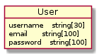
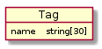
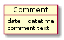

Symfony
Cours
EPSI/B2 - v1.0.1
Rappels
Programmation en PHP
Que peut faire PHP ?
La syntaxe
Les fonctions
La programmation orientée objet
Cours
Introduction à Symfony
Du navigateur vers Symfony
Architecture de Symfony
tp
Sujet du TP
Installation et configuration de PHP
Installation de Symfony
Création du bundle
Créer une page sous Symfony
Le web-profiler
Les routes
Les assets
Configuration de la base de données
Création des entités
Génération de l’entité
Création de la table correspondant dans la base de données
L’ORM
Autres entités du blog
User
Tag
Comment
Création des relations entre les entités
Aide
Console
Contrôlleur
Symfony
Docs
»
Création des entités
»
Autres entités du blog
Autres entités du blog
¶
Créez les autres entités nécessaires à la réalisation du blog :
User
¶

Tag
¶

Comment
¶
